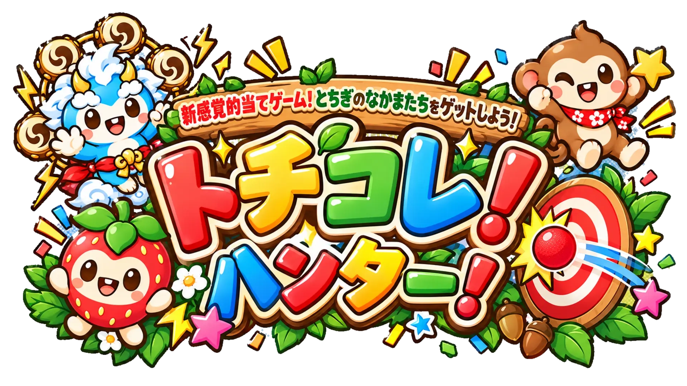

先に「カメラ映像の中で、実際のゲーム画面がどこに映っているか」を登録します。TVを画角いっぱいにする必要はありません。
カメラ映像上で ①左上 → ②右上 → ③右下 → ④左下 の順に投影画面の角をタップしてください。
この4点から「カメラ画角の中のゲーム画面範囲」を先に計算します。その後、5cm薄ピンク球で精密キャリブレーションします。
薄ピンクのボールを十字の中心に重ねてください。

iPad用キャリブレーション未実施
遊ぶ人に合わせて、キャラクターの動く速さを選べます。
制限時間・得点・ボス出現タイミングは変わりません。
背面／前面は上のボタンで明示的に切り替えます。将来Osmo Action 5 ProなどのUSB/UVCカメラがSafariから認識された場合は、外部カメラ欄から選択できます。カメラを変更するとキャリブレーションは解除されます。
アプリ風に使う：Safariの共有 →「ホーム画面に追加」→「Webアプリとして開く」をオン。オフライン運用はHTTPSで一度起動・キャッシュ完了後、機内モードで起動テストしてください。